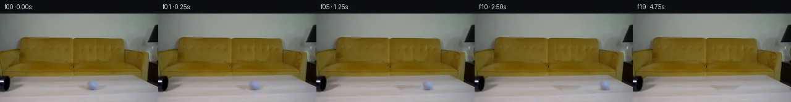

![首帧]()

Round 00
2026-11-04T21:28:09.004502+00:00像素候选变化代码 +227/−0inspection 更新
pixels f20b71f8f43eab4d · code 5e0a125e6fc6f11f
查看本轮 generate.py 真实 diff
--- previous/generate.py
+++ current/generate.py
@@ -0,0 +1,227 @@
+"""Deterministic, source-pixel continuation; no external models or renderer.
+
+Later frames are checked numerically, not viewed with an image tool.
+"""
+from pathlib import Path
+import json
+import math
+import hashlib
+import numpy as np
+from PIL import Image, ImageDraw
+from scipy.ndimage import map_coordinates, gaussian_filter
+from artifact_io import save
+
+ROOT = Path(__file__).resolve().parent
+W, H, N, FPS = 256, 144, 20, 4
+CX, CY, RADIUS = 149.5, 116.5, 8.1
+Y, X = np.mgrid[:H, :W].astype(np.float64)
+
+
+def smoothstep(lo, hi, a):
+ z = np.clip((a-lo)/(hi-lo), 0, 1)
+ return z*z*(3-2*z)
+
+
+def sample_rgb(array, sx, sy):
+ return np.stack([map_coordinates(array[..., c], [sy, sx], order=1,
+ mode='constant', cval=0., prefilter=False)
+ for c in range(3)], axis=-1)
+
+
+def clean_plate(source):
+ # Fill only the ball and its small soft contact-shadow footprint. The
+ # table has horizontal streaks, so estimate one RGB line per source row.
+ estimate = source.copy()
+ for row in range(103, 132):
+ left = source[row, 132:138].mean(axis=0)
+ right = source[row, 164:170].mean(axis=0)
+ u = np.clip((X[row]-134.5)/(166.5-134.5), 0, 1)
+ line = left[None, :]*(1-u[:, None])+right[None, :]*u[:, None]
+ # Preserve subdued existing grain from an adjacent, same-row strip.
+ donor = source[row, 98:130]
+ donor_trend = gaussian_filter(donor, sigma=(2.2, 0))
+ texture = donor-donor_trend
+ index = np.clip(np.arange(W)-134, 0, 31)
+ estimate[row] = line + 0.35*texture[index]
+ footprint = np.sqrt(((X-CX)/14.0)**2+((Y-(CY+0.6))/12.4)**2)
+ mask = 1-smoothstep(0.73, 1.0, footprint)
+ return source*(1-mask[..., None])+estimate*mask[..., None], mask
+
+
+def appearance_texture(normals):
+ # A restrained great-circle-like curved tennis seam and subpixel felt
+ # variation. The phase-zero value is subtracted during synthesis, so
+ # there is no seam or color discontinuity at the starting instant.
+ nx, ny, nz = normals
+ longitude = np.arctan2(nz, nx)
+ seam_distance = ny-0.33*np.cos(2*longitude)
+ seam = np.exp(-0.5*(seam_distance/0.070)**2)
+ felt = (0.50*np.sin(16*nx+13*ny-9*nz)
+ + 0.30*np.sin(29*ny+17*nz+5*nx)
+ + 0.20*np.cos(37*nx-21*nz))
+ return 4.0*seam+0.8*felt
+
+
+def rotate(normals, angle):
+ # In screen coordinates, y is up and z points toward the camera. The
+ # depth axis of a level tabletop projects here at a 23-degree elevation.
+ axis = np.array([0., math.sin(math.radians(23)),
+ math.cos(math.radians(23))])
+ c, s = math.cos(angle), math.sin(angle)
+ dot = np.einsum('i,ihw->hw', axis, normals)
+ cross = np.cross(axis, normals.transpose(1, 2, 0)).transpose(2, 0, 1)
+ return normals*c + cross*s + axis[:, None, None]*dot[None]*(1-c)
+
+
+def motion(t):
+ return 25*t-0.2*t*t
+
+
+def render(source, plate, residual, displacement):
+ sx = X-displacement
+ moved_delta = sample_rgb(residual, sx, Y)
+ source_bg = sample_rgb(plate, sx, Y)
+ dx, dy = (sx-CX)/RADIUS, -(Y-CY)/RADIUS
+ rr = np.sqrt(dx*dx+dy*dy)
+ # Supplied ball has already blurred, antialiased edges. This opacity is
+ # only used to keep ball color independent of the local wood underneath;
… diff truncated; 140 more lines …